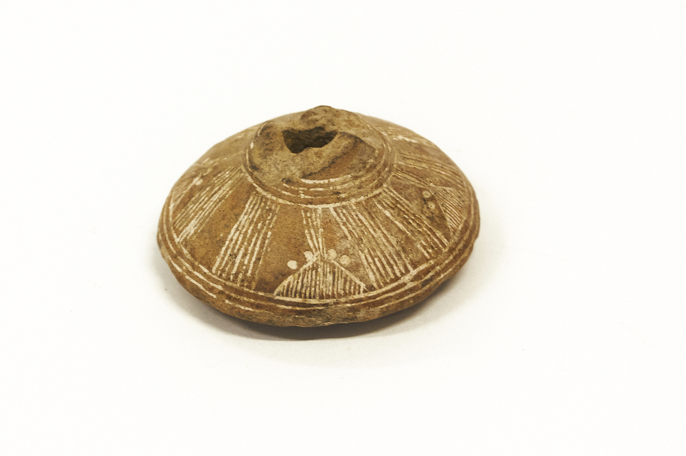

Título del Cuadro de Texto
¿Qué es un volante de huso? Objeto "volante de huso", cuerpo macizo con orificio vertical, para introducir el huso el cual es un palo de madera delgado, en el que se envuelve el hilo para hacerlo girar y utilizar en el hilado.